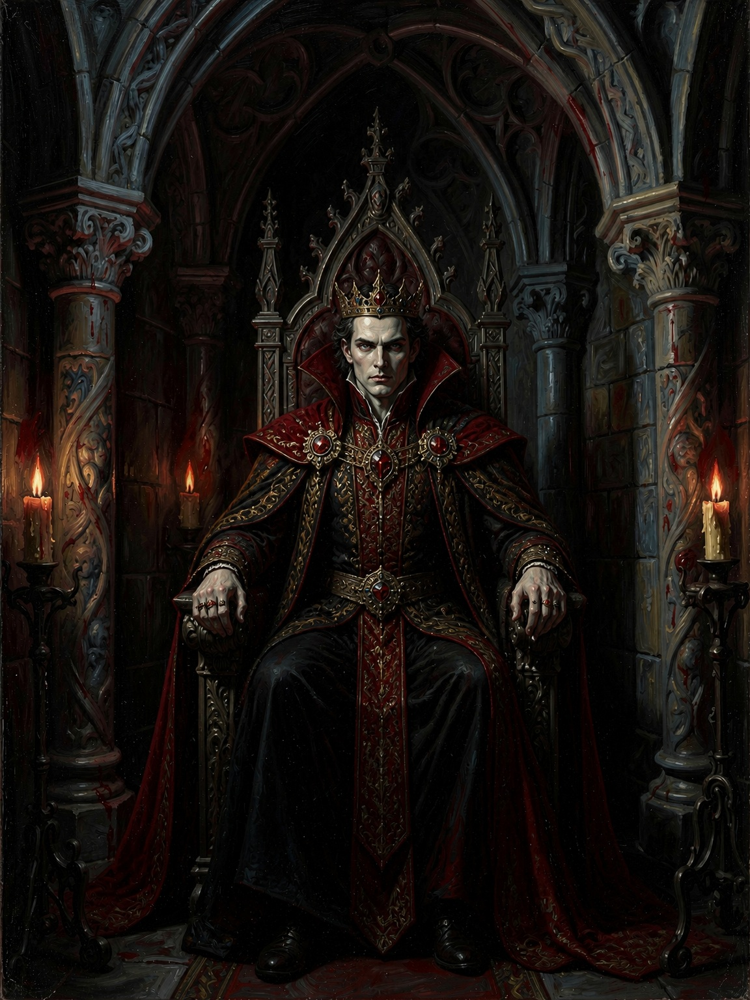
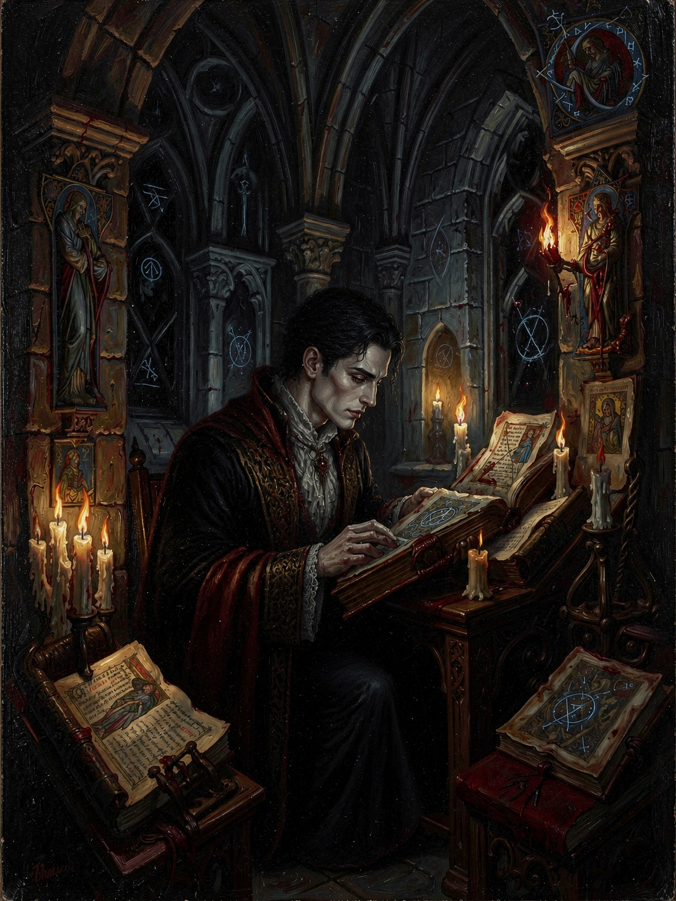
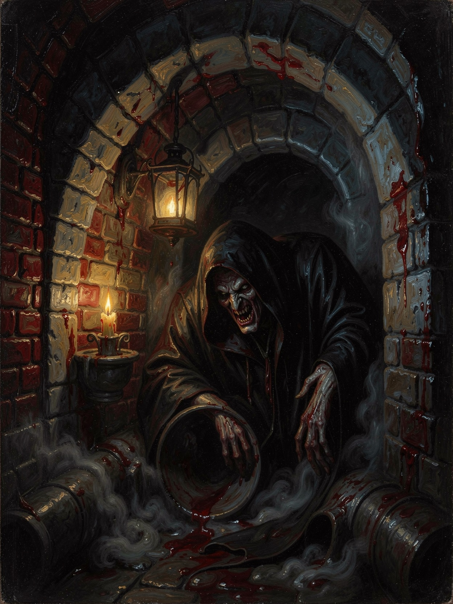
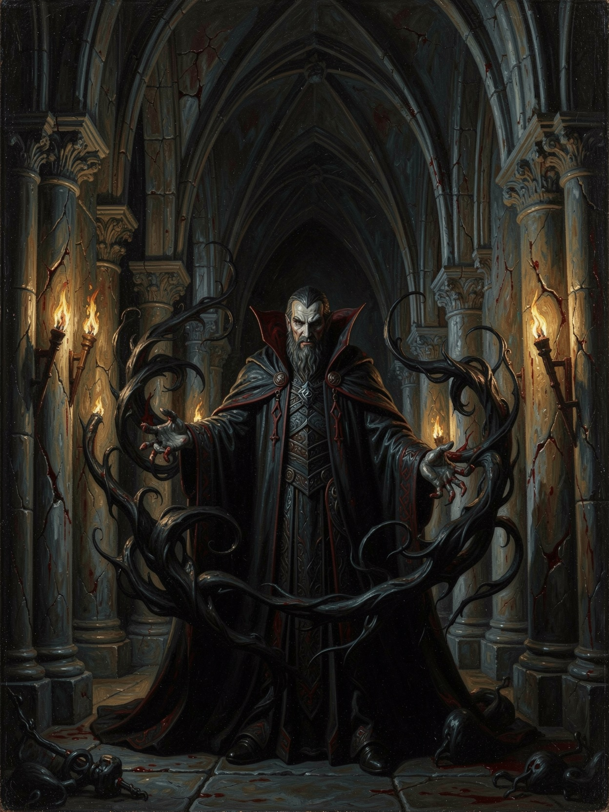
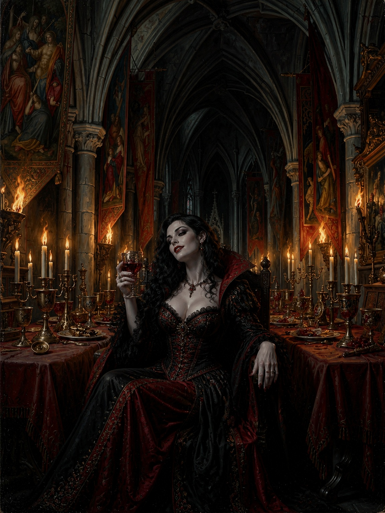
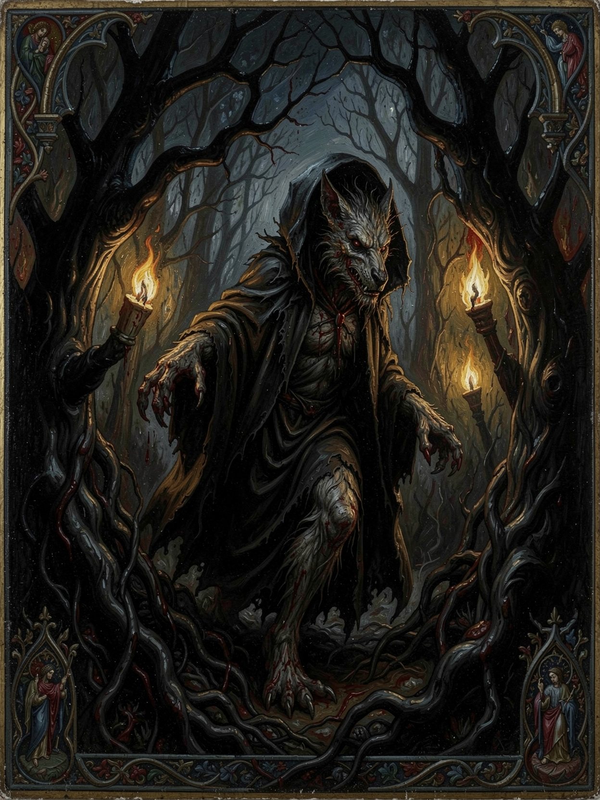
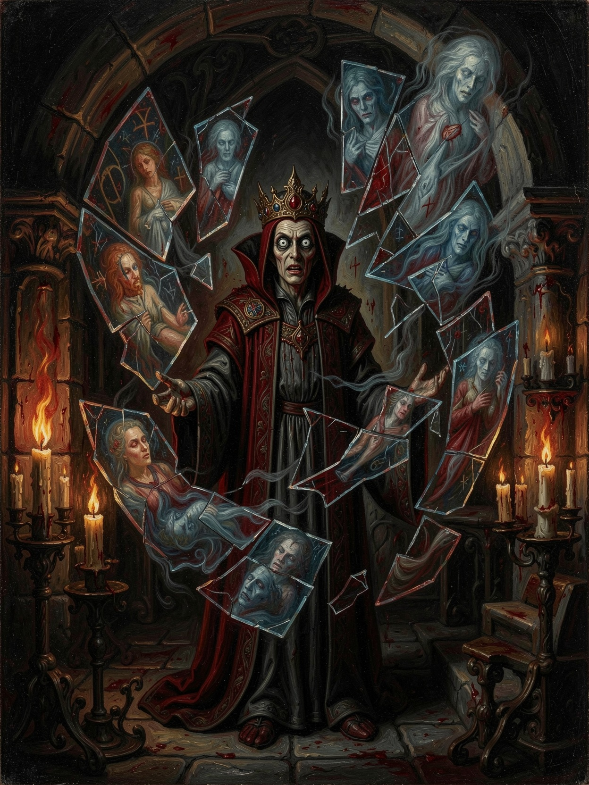
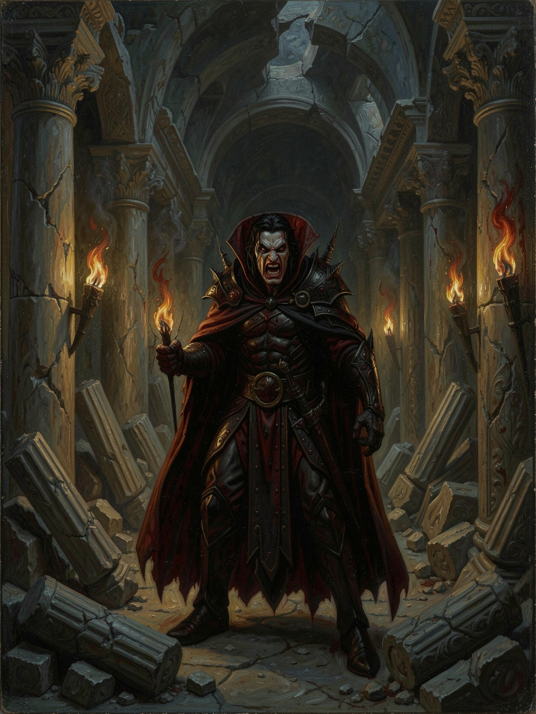
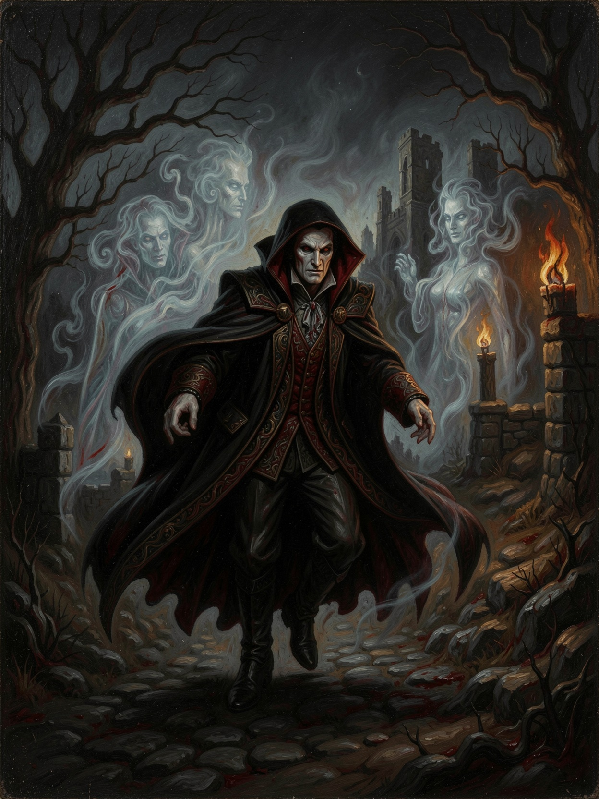
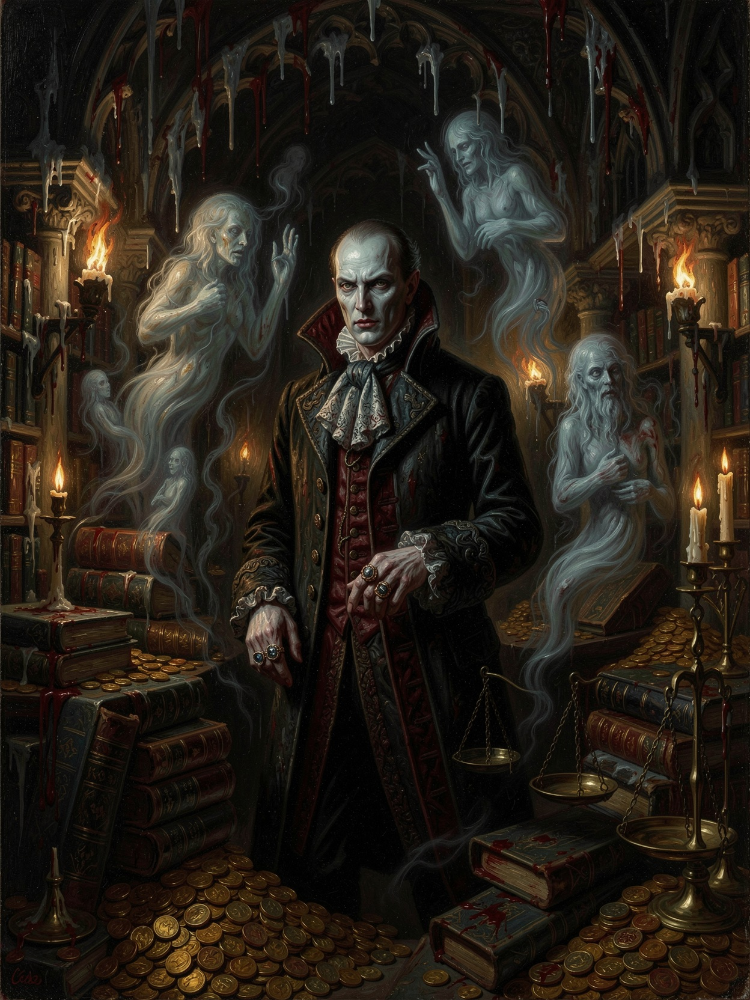

The Patricians
Ventrue
The Patricians — the self-appointed lords of the Damned
Disciplines
- Dominate·command minds
- Fortitude·endure all wounds
- Presence·inspire love or terror
Bane
May feed only from one narrow mortal type — all other blood is ash.
Potential backgrounds
- The Imperial Envoy (HRE)
- The Byzantine Noble
- The Teutonic Knight
[ Playable ]
When the Mongols turned and rode east they left the Patricians a gift only they knew how to unwrap: a kingdom of dead heirs, burned records, and masterless land — a ledger wiped clean for a hand cold enough to claim it. Rome taught them that empires are held not by the sword but by the record, the oath, and the coin, and here all three lie in ruins waiting to be seized; so a Prince of their blood holds the domain and means to make himself the man on whom the rebuilding of Hungary rests. To be Ventrue in this chronicle is to carry that certainty like a second curse — you were chosen, as a city chooses a magistrate, to rule — while the crown you would inherit is made of ice and bone, and every other power reaching into the ash means to take it first.

The Usurpers
Tremere
The Usurpers — the trembling ones
Disciplines
- Auspex·preternatural senses
- Dominate·bend another's will
- Thaumaturgy·blood bent into sorcery
Bane
The first draught of another Cainite's blood counts double toward a blood bond — the second drink completes it.
Potential backgrounds
- The Chantry Refugee
- The Hermetic Apostate
- The Council's Pledge
[ Playable ]
Mortal Hermetic mages who drank vampiric blood in 1022. The youngest blood in the city and the least trusted — mortal wizards who, two centuries ago, drank a stolen immortality no one had offered them, and have been paying for the theft ever since. In the Carpathians their war with the Tzimisce has gone badly: chantries burned, the fiends baying for the erasure of the whole clan, and the great houses of the old Order of Hermes still cursing the apprentices who made themselves monsters. So the Usurpers have come down into Buda-Pest with their hands open, trading the one thing the Prince cannot buy elsewhere — blood bent into learnable sorcery — for a roof and a border to hide behind. To be Tremere here is to be useful and unfree: welcomed for your magic, watched for your ambition, bound by the vial of your own vitae the clan holds over you, and hunted through the streets by an enemy who remembers exactly whose land your tower stands on. You bought immortality once; in this city you will spend it discharging the debt.

The Priors — The Hidden Ones
Nosferatu
The Priors — the hidden ones
Disciplines
- Animalism·command rats and worse
- Obfuscate·go unseen or wear another face
- Potence·lock-breaking strength
Bane
Appearance nil and unraisable — they fail every first impression save one: terror.
Potential backgrounds
- The Cartographer Below
- The Plague-Pit Warden
- The Tzimisce's Old Debt
[ Playable ]
The Embrace that made them ground their beauty into nightmare over long nights and drove them down — into the Roman drains beneath old Aquincum, the plague-pits the Mongols filled and left, the cellars and crypts of two half-burned towns. Above them the city is a wound in the process of being dressed: masterless land, dead heirs, records gone to ash, and every power in the region reaching into the dark to grope for what the fire left. The Hidden Ones are already there, in that dark, and have been all along. What they surrendered in appearance they have taken back a hundredfold in knowledge — who is truly buried where and who is not buried at all, which tunnels the horde overlooked, whose claim to a burned estate is a lie. To be Nosferatu in this chronicle is to be the thing every faction needs and none will seat at the table: the Prince cannot rebuild without your maps of the world below, his rivals cannot move without your silence, and both would rather you stayed a rumour than a witness.

The Magisters
Lasombra
The Magisters — lords of shadow and ambition
Disciplines
- Dominate·command a mind with a word
- Obtenebration·shadow given the substance of a wound
- Potence·strength that breaks stone
Bane
They cast no reflection, and the sun wounds them worse than most of the Damned.
Potential backgrounds
- The Sicilian Envoy
- The Heresiarch
- The Iberian Exile
[ Playable ]
The Magisters withdrew their hand from Hungary long ago, and the reborn domain the Ventrue are raising from the ash holds no elder of their blood, no chantry, no claim — which is exactly why the one who comes, comes as an envoy and not a native. The clan rules from the Mediterranean and from within the shadow of the Church, and it holds a single article of faith above all others: that excellence is the only pedigree that matters, and that darkness is a tool, a sacrament, or both. To such a clan a shattered frontier kingdom is a question, not a home — is this Prince's cause worth an alliance, a conversion, or a conquest? So a Lasombra in this chronicle arrives from somewhere else, from Montano's Castle of Shadows in Sicily or from the burning intramural wars of Iberia, carrying loyalties a thousand miles deep and a courtesy that can be withdrawn. He gives the Prince what no local blood can — dominion over living darkness, the weight of a clan that treats the Church as its instrument — and takes, in return, a foothold on ground where none of his own kind can reach him. But he casts no reflection and the sun bites him worse than most, and he knows the oldest truth of his line better than any: the only thing that has ever truly threatened a Lasombra is another Lasombra.

The Aesthetes — Artisans, Vanitas
Toreador
The Aesthetes — Artisans, Vanitas
Disciplines
- Auspex·find the flaw and the masterpiece
- Celerity·move faster than sight
- Presence·turn a room into an audience
Bane
Caught by a thing of true beauty, they freeze entranced — until the scene ends or the object departs.
Potential backgrounds
- The Court Artificer
- The Minnesinger
- The Mourning Beauty
[ Playable ]
They are the clan that cannot stop looking at a thing of beauty even as it burns — and Buda-Pest, in the ash of the invasion, is a broken thing waiting to be made beautiful again. Where the Ventrue see a ledger wiped clean and the Nosferatu a warren of secrets, the Aesthetes see a canvas: a royal town and a merchant town to be raised from rubble into something a kingdom can believe in, cathedrals to rebuild, a court to fill with music and rite and the pageantry that makes frightened mortals feel their king is still a king. This is the clan's particular use to the Prince — he holds the domain, but a domain that looks like ruin invites challenge, and the Toreador make ruin look like a reign. To be Toreador here is to be the author of the crown's image: you stage the processions, patronise the masons and the minnesingers, dress a shaky legitimacy in gold leaf so that when men look upon Buda-Pest they see order rather than a grave.

The Wolf's-Heads — Outlaws
Gangrel
The Wolf's-Heads — Outlaws
Disciplines
- Animalism·speak to and ride beasts
- Fortitude·survive what would end another
- Protean·claws, earth-melding, beast or mist
Bane
Each frenzy leaves a mark of the Beast on the body — fur, a feral eye — that carries a penalty until accepted.
Potential backgrounds
- The Marchwarden
- The Wolf's-Head Exile
- The Anda's Shadow
[ Playable ]
They are the clan the walls were never built to hold — outlanders who found the Beast an easy fit and civilised nights a poor one, at home on the roads and in the wild marches where the other clans' politics thin out to nothing. The invasion was their kind of catastrophe: it emptied the countryside, opened the passes, and turned the ordered kingdom the Ventrue prize into exactly the lawless frontier a Gangrel understands. They drift into Buda-Pest the way weather does — following the reopened roads, the refugee trails, the war-fattened wolf packs down out of the Carpathians — and they owe the Prince's crown of ice and bone nothing at all. That is precisely their value and their problem. A Gangrel goes where the walls end and comes back knowing what moves in the dark beyond the city: which passes the Mongols really left by, whether the horde is truly gone and what rides the steppe by night behind them.

The Cassandras — Children of Malkav, Seers
Malkavian
The Cassandras — Children of Malkav, Seers
Disciplines
- Auspex·see what others cannot
- Dementation·sow madness as weapon or revelation
- Obfuscate·vanish from sight and memory
Bane
One derangement, chosen at creation, that can never be cured — held off by Willpower only a turn at a time.
Potential backgrounds
- The Prince's Oracle
- The Cassandra of the Invasion
- The Cult Hierophant
[ Playable ]
In a city groping through the dark for the shape of a burned kingdom's future, the clan that already sees it should be beyond price — and instead they are feared, because the Cassandras are mad, and every one of them is mad in a way that turns out, too often and too late, to be right. Malkav's blood grants sight beyond the veil at the cost of a wound in the mind that no power under heaven will heal, and it leaves its bearers unable to simply report what they know: they speak it sideways, in riddle and compulsion and ruin, so that a warning arrives as a scandal and a prophecy as a fire already lit. They do not fight the wars of this domain — they start them. And they feel a colder wind coming than the one off the Danube: in 1242 the Church has begun to name madness a stain upon the soul, so the persecution that will one night fall on the whole clan is only just gathering.

The Zealots — Philosopher-Kings, Rabble
Brujah
The Zealots — Philosopher-Kings, Rabble
Disciplines
- Celerity·strike first and often
- Potence·make every blow crush
- Presence·turn a crowd before the fighting starts
Bane
Passion runs to rage — they may never spend Willpower to avoid a frenzy, only to end one already begun.
Potential backgrounds
- The Carthage Avenger
- The Broken Retainer
- The Firebrand Scholar
[ Playable ]
They arrive at every ruin carrying the memory of the first one. Fifteen centuries ago Troile raised at Carthage a city where the Damned and the living were meant to share an ideal, and Rome's Ventrue and Malkavians burned it down across a fifty-year war whose grudge has never, in all the nights since, cooled — so when a Brujah looks at Buda-Pest, at the masterless land and the cold Ventrue Prince raising a new order over the graves, she does not see a kingdom being rebuilt. She sees the old lie being told again: the powerful few dressing their dominion in the language of order, the many buried under it. What remains of the philosopher-kings is the argument walking — idealists who treat revolt as a moral duty, scholars who remember exactly who burned what, generals and firebrands whose passion is at once their genius and their ruin.

The Charlatans — Shapers, the Unwelcome
Ravnos
The Charlatans — Shapers, the Unwelcome
Disciplines
- Animalism·commune with and command beasts
- Chimerstry·waking illusion, theirs alone
- Fortitude·endure what others cannot
Bane
Bound to a single virtue or vice they cannot refuse when the moment to express it comes.
Potential backgrounds
- The Road-Ghost
- The Marked Debtor
- The False Legate
[ Playable ]
They came in the way they always come — not summoned and not welcome, on the same reopened roads that carried the refugees and the wolf-packs down out of the ruined east. The invasion that broke the kingdom was, for the Charlatans, merely the latest turn of a wheel they have watched forever: to a clan that holds all of settled reality to be maya, a passing illusion, a Prince's crown of ice and bone is one more mirage men have agreed to believe in, and one more thing that can be shown to be less solid than it looks. To be Ravnos in this chronicle is to be the outsider the roads dragged in and no one can quite drag back out: you have no native claim to either town, no seat in the Prince's court, no debt anyone recognises — only your wits, your jati of kin who may arrive to settle any account done to you, and the dangerous freedom of a creature everyone underestimates because they have already decided what you are.

The Merchant-Necromancers — the Young Ones
Giovanni
The Merchant-Necromancers — the Young Ones
Disciplines
- Auspex·preternatural perception
- Fortitude·resilience beyond mortal reckoning
- Necromancy·the command of ghost and grave
Bane
Their cold, corpse-pale blood sets mortal flesh instinctively on edge — the Kiss is agony rather than ecstasy.
Potential backgrounds
- The Widow's Ledger
- The Gravebinder
- The Family's Envoy
[ Playable ]
They followed the money north, the way they always do — a young Venetian bloodline of merchant-necromancers rising quietly inside the ancient Cappadocian clan of death, and a shattered kingdom is exactly the kind of opportunity their ledgers are built to exploit. Where the invasion left masterless estates and dead creditors, it also left desperation, and desperation borrows: half the surviving nobles of Pest need silver to rebuild, and the Giovani have it, at terms that turn a loan into a leash. But coin is only the half of what they trade. Alone among the Damned they know precisely where they came from — Augustus, Embraced by Cappadocius himself — and their blood commands not gold alone but ghost and grave, the arts of necromancy that a city carpeted with the unquiet, unburied dead of an apocalypse makes newly, terribly valuable.